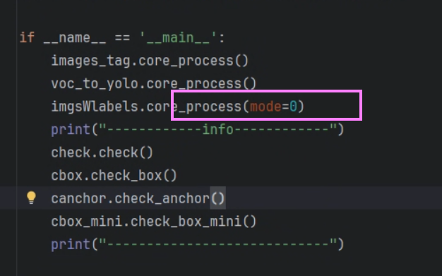
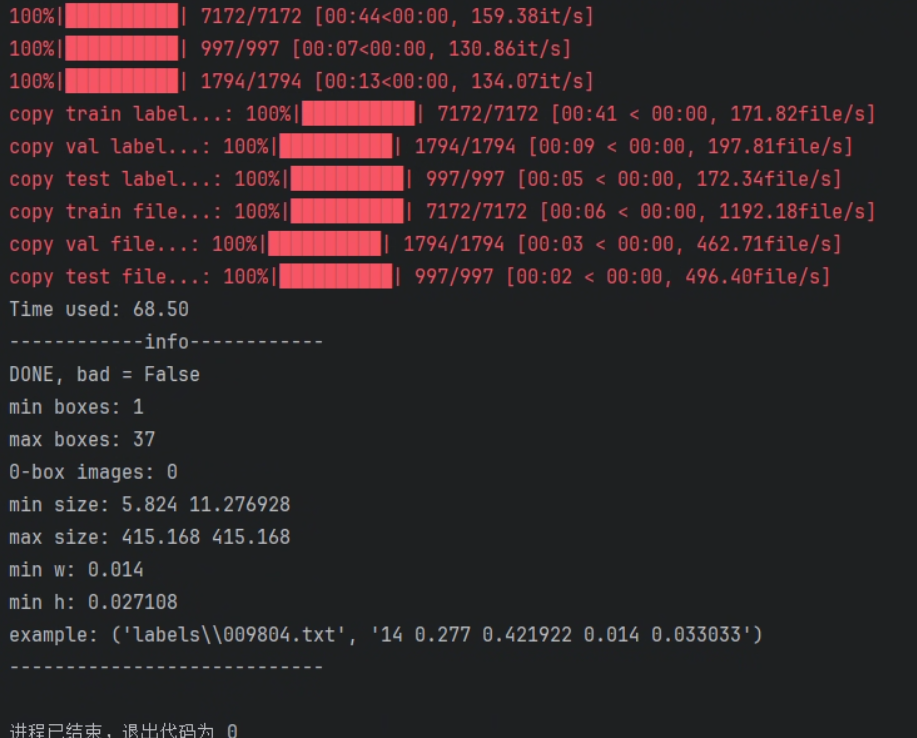
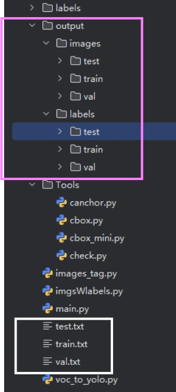
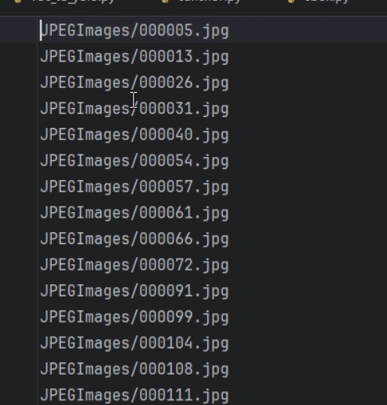

# v2yWdtc
v2yWdtc 是我无聊编写的一款将 VOC 格式转换为 YOLO 格式的工具，它的构成非常简单，尽管如此它很强大，它可以辅助你分析你的数据集是否有异常的数据，同时针对空标签还有过滤功能。
- 快速转换：一键将 VOC 格式标签转换为 YOLO 格式。
- 数据预检测：统计数据集，辅助你发现异常标签或标注问题。
- 空标签过滤：自动过滤空标签，保证训练数据质量。
- 简单易用：无需复杂配置，几步操作即可完成数据预处理。
# 开源地址 - ⭐！
v2yWdtc：https://github.com/735690757/v2yWdtc
# 项目结构
| 目录 / 文件 | 核心职能说明 |
|---|---|
Annotations/ |
原始标签存放地。通常存放标准的 XML 格式文件，包含目标类别和边界框坐标。 |
Imagesets/ |
数据集索引中心。存放 train.txt , val.txt , test.txt 等。之前的报错正是因为程序无法在此找到这些索引文件。 |
JPEGImages/ |
原始图像库。存放所有训练和测试用的图片（ .jpg 格式）。 |
Tools/ |
数据诊断工具箱。包含用于分析数据集质量的脚本（如 check.py 检查完整性， cbox.py 分析边界框分布）。 |
images_tag.py |
标签处理模块。可能涉及图像标注的自动化处理或类别名称映射。 |
imgsWlabels.py |
数据分发引擎。负责根据索引文件将图片和转换后的标签文件分发到指定的训练 / 验证文件夹中。 |
main.py |
项目总入口。一键化操作的控制台，通过调用其他模块完成全流程转换。 |
voc_to_yolo.py |
格式转换核心。执行最关键的 XML 到 TXT 归一化转换逻辑。 |
# train 与 val 模式、trainval 模式
切换模式只需要修改 main.py 的此处：
# train 与 val 模式（0 模式）（默认模式）
在这种模式下，数据集被分为三个部分：训练集、验证集、测试集，这种模式的特点是：训练集和验证集是分开的，避免数据泄露，确保模型的泛化能力。
# trainval 模式（1 模式）
在 trainval 模式下，训练集和验证集被合并为一个整体的数据集，模型在整个 trainval 数据集上进行训练和验证。这种模式通常用于特定的任务，例如数据量不大时，可以通过合并训练集和验证集来提升训练集的多样性和大小。
# 使用方法
- 将图片数据放在 JPEGImages 下
- 将 xml 放在 Annotation 下
- 执行主函数
- ok 了就
# 执行过程
# 结果文件
紫色输出结果是图片（训练、验证、测试）和标签（训练、验证、测试）
白色输出结果是这样的索引记录格式：
# 参考开源脚本
https://github.com/JieZzzoo/Data_Trans